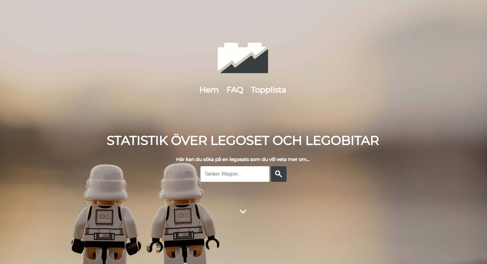
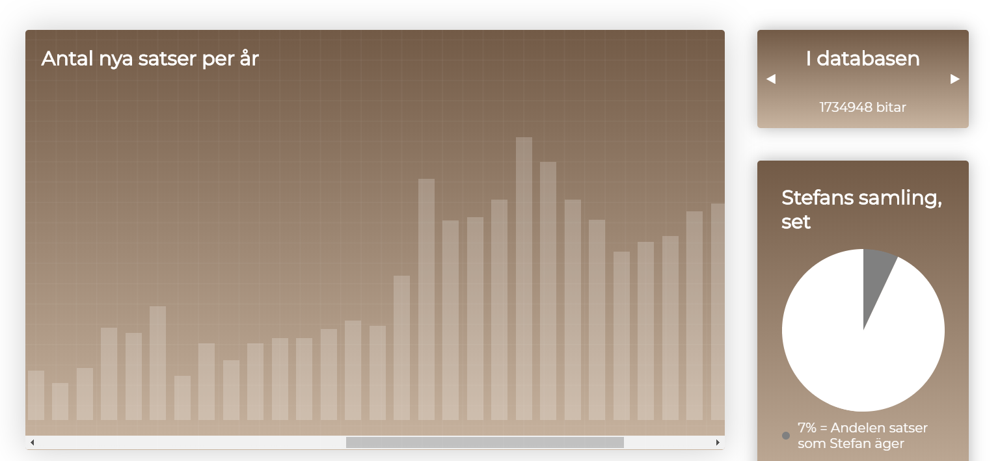
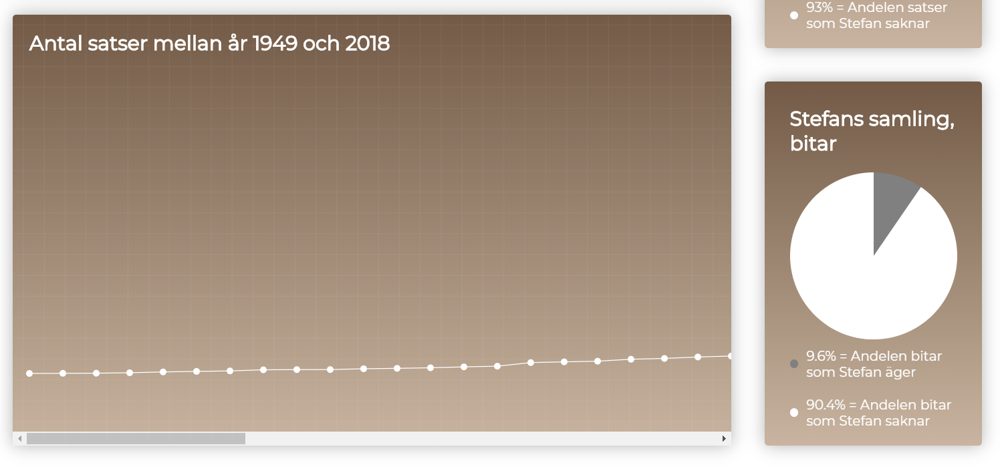
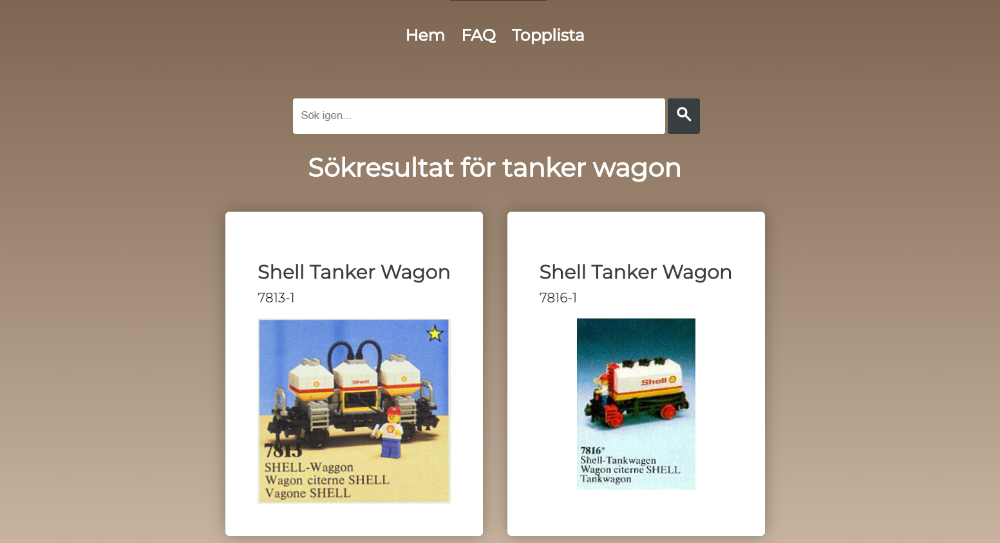

Summary
This project was part of the course Electronic Publishing at Linköping University. The task for the group was to use MySQL and PHP to collect data from a database about lego sets and pieces. Then we should display different statistics about the database in a accurate way with the use of Javascript, HTML and CSS.
We implemented a number of different graphs as well as some "fun facts" from the database and also implemented a search function to allow the user to find specific sets and see statistics of the pieces that the set contains.
My responsabilities was mostly coding in MySQL and PHP to ensure that we collected the correct data from the database. Full project site can be found here
Technical Walkthrough
The task of the project was to create an interface to calculate and show different kinds of statistics over a lego database in an appropriate way. We should use different kind of graphs and we couldn't use any pre-built code for graphs. The thought customer is a person that wants to keep track of pieces of legos or see which pieces are harder or easier to find.
We chose to use PHP to collect data that could be sent to the client that displays the graphs using Javascript. In this way we reduced the workload for the server and could use Javascript to create, animate and change the graphs.
We created 4 different graphs using Javascript, a bar chart, a line chart, a pie chart and a small info square with arrows to display some small statistics.
The project was assessed on both the task, validation of the code and the design. We finished with adding the style to the page where we wanted to focus on a clean and simple page that was effective.
  